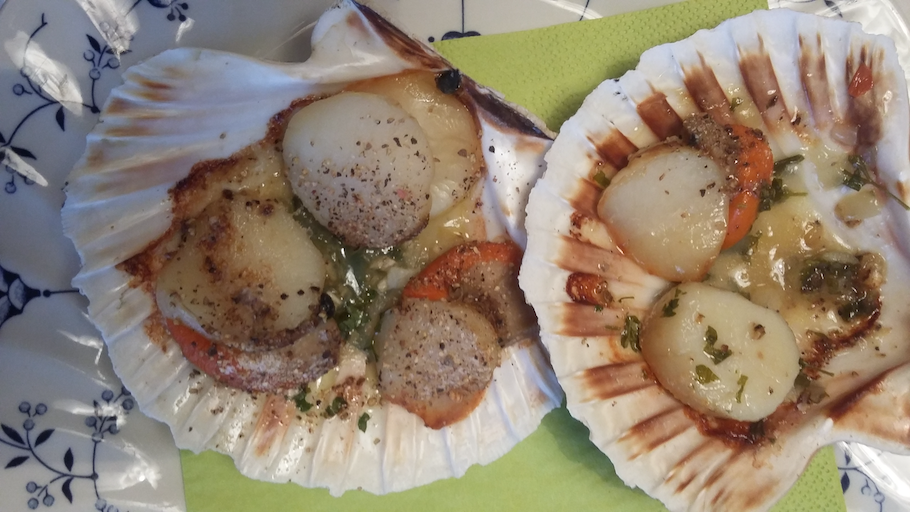

<ion-content>
  <div class= "pageContent">
    <h1>Noix de Saint-Jacques flambée au cognac</h1>
    
    <p>Faire fondre du beurre avec des échalotes puis ajouter les noix de Saint-Jacques. Les faire revenir en laissant le milieu translucide puis les retirer du feu.</p>
    <p>Ajouter l'ail et le persil dans la poêle et laisser cuire quelque secondes. Bien faire chauffer la poêle, puis flamber au Cognac. Une fois la flamme éteinte, ajouter les noix de Saint-Jacques (il ne faut pas les flamber car elles perdraient leur saveur).</p>
    <p>Déguster chaud nature ou accompagné d'une fondue de poireaux.</p>
  </div>
</ion-content>
